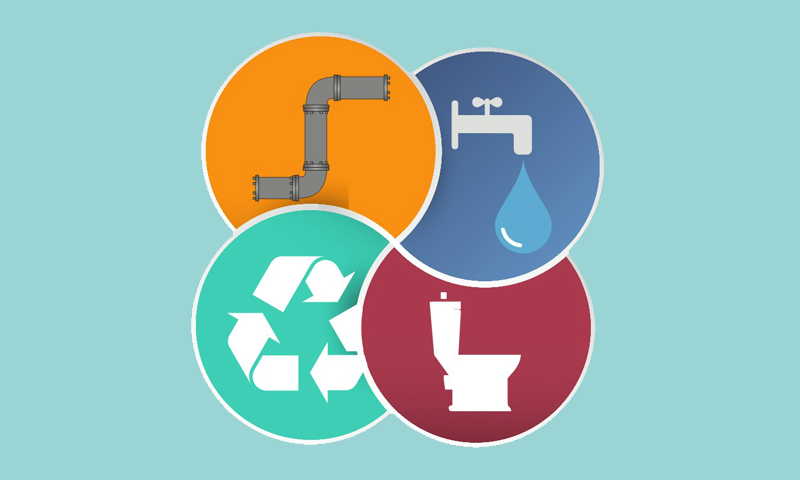

6.1 até 2030, alcançar o acesso universal e equitativo à água potável, segura e acessível para todos
6.2 até 2030, alcançar o acesso a saneamento e higiene adequados e equitativos para todos, e acabar com a defecação a céu aberto, com especial atenção para as necessidades das mulheres e meninas e daqueles em situação de vulnerabilidade
6.3 até 2030, melhorar a qualidade da água, reduzindo a poluição, eliminando despejo e minimizando a liberação de produtos químicos e materiais perigosos, reduzindo à metade a proporção de águas residuais não tratadas, e aumentando substancialmente a reciclagem e reutilização segura globalmente
6.4 até 2030, aumentar substancialmente a eficiência do uso da água em todos os setores e assegurar retiradas sustentáveis e o abastecimento de água doce para enfrentar a escassez de água, e reduzir substancialmente o número de pessoas que sofrem com a escassez de água
6.5 até 2030, implementar a gestão integrada dos recursos hídricos em todos os níveis, inclusive via cooperação transfronteiriça, conforme apropriado
6.6 até 2020, proteger e restaurar ecossistemas relacionados com a água, incluindo montanhas, florestas, zonas úmidas, rios, aquíferos e lagos
6.a até 2030, ampliar a cooperação internacional e o apoio à capacitação para os países em desenvolvimento em atividades e programas relacionados a água e saneamento, incluindo a coleta de água, a dessalinização, a eficiência no uso da água, o tratamento de efluentes, a reciclagem e as tecnologias de reuso
6.b apoiar e fortalecer a participação das comunidades locais, para melhorar a gestão da água e do saneamento.
A escassez de água afeta mais de 40 por cento das pessoas do mundo, um número alarmante que irá crescer com o aumento da temperatura global do planeta, resultado da mudança global do clima. Mesmo após 2,1 bilhões de pessoas passarem a ter acesso à água potável e de qualidade desde 1980, a possível diminuição desse número é um problema central que impacta todos os continentes. Em 2011, 41 países vivenciaram problemas por causa da água – 10 deles estão perto de diminuir o fornecimento de água potável e agora precisam de fontes alternativas para garantir esse insumo básico. O aumento da desertificação e de secas já está afetando esse panorama. Para 2050, está projetado que uma em cada quatro pessoas será afetada pela carência de água. Garantir o acesso universal e seguro à àgua potável até 2030 requer investimento em infraestrutura adequada, acesso a saneamento e fomentar a higiene em todos os níveis. Proteger e recuperar ecossistemas que vivem e dependem da água como florestas, montanhas, pântanos e rios é essencial se nós queremos mitigar a escassez de água. Uma maior cooperação internacional também é necessária para fomentar e apoiar o uso correto da água por meio do tratamento adequado, com a colaboração da tecnologia, em países em desenvolvimento.
